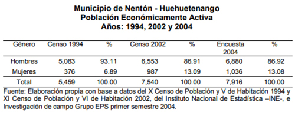
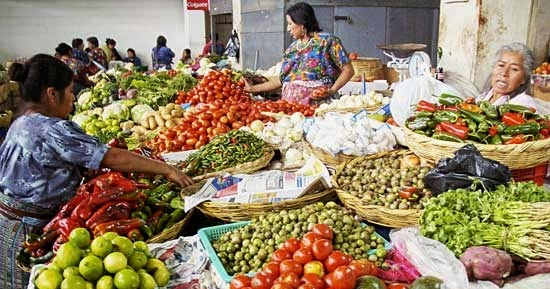

Economía La economía del departamento de Huehuetenango, se basa en la agricultura regional que comprende los más variados cultivos, de acuerdo con las múltiples condiciones topográficas y climatológicas, así como la naturaleza del suelo. En tierra caliente y templada se ha cultivado café, caña de azúcar, tabaco, chile, yuca, achiote y gran variedad de frutas. En tierra fría, se cultiva el trigo, más generalizado y se produce en todo el departamento de Huehuetenango. En épocas pasadas la fuente de riqueza de los pueblos de Huehuetenango, ya que contaba con la excelencia de sus pastos y el comercio continuo con las haciendas mexicanas que tiempo inmemorial, han ejercido los oficios que constituyen la industria en sus formas más corrientes, transformando las materias primas para los servicios usuales de la vida cotidiana. La alfarería y la industria de cuero se siguen dando. En la cabecera departamental se ha fabricado buen ladrillo y teja de barro; en Malacatancito, hábiles canteras labran la piedra y fabrican piedras de moler maíz, que se venden en toda la región. La industria de hilados y tejidos, aunque en pequeña escala, todavía se practica en todo el departamento. Así mismo se explotan algunas minas de plata, plomo, zinc y cobre. Una artesanía de importancia es la cerámica tradicional, la cual modelan en 16 municipios. Esta requiere solamente una quemada, la cual hacen al aire libre. En Chiantla trabajan la cerámica vidriada que es quemada dos veces en horno. Con la palma hacen trenzas, sombreros, petates y escobas. Además fabrican productos de cestería y jarcia. En 26 de 31 municipios, elaboran muebles de madera y productos de cerería. En la parte baja trabajan el cuero y en Santa Ana Huista elaboran las jícaras. Tres artesanías de este departamento han obtenido mucha fama: las guitarras que fabrican en la ciudad de Huehuetenango, que por su calidad y sonoridad tienen mucha demanda, y por último, en Chiantla trabajan el cobre, con el cual hacen variedad de productos al igual como lo realizan con el hierro y la hojalata. Así también son fabricantes de productos pirotécnicos. La economía del departamento se basa en la agricultura, actividad a la que se dedica más del 70% de la PEA. La segunda actividad en importancia es la de servicios (8%), seguida por el comercio (7%), construcción (5%) e industria (4%). A la administración pública y la enseñanza se dedican, en conjunto, el 3%. Si bien la participación de las mujeres en la PEA es notoriamente menor que la de los hombres, se encuentra más diversificada aunque la actividad agrícola es también en la que labora el mayor porcentaje de mujeres, respecto al resto de actividades En el departamento, un 38% de la PEA trabaja por cuenta propia; 22% son empleados privados. En la categoría de familiar no remunerado se desempeña más del 25%, cifra que, además de ser bastante alta, es más que el doble del promedio nacional. En el caso de las mujeres que conforman la PEA, 28.8% de ellas realizaban trabajo familiar no Perfil Departamental Huehuetenango Código PR-GI006 Versión 01 Fecha de Emisión 24/03/17 Página 13 de 29 remunerado, lo que evidencia su alta participación en tareas no remuneradas. Cabe aclarar que, de acuerdo con algunos comentarios vertidos en entrevistas realizadas por IDIES, al hacer referencia al trabajo familiar no remunerado es común que se identifique como tal el que las personas realizan de forma cotidiana, pero se excluye si éste es realizado sólo una o dos veces por semana y/o si es sólo por períodos de tiempo de entre una y tres horas. Es así como las labores de “ayuda al esposo” que realizan algunas mujeres no son reconocidas ni siquiera como trabajo familiar no remunerado debido a que no es algo que hagan todos los días.
